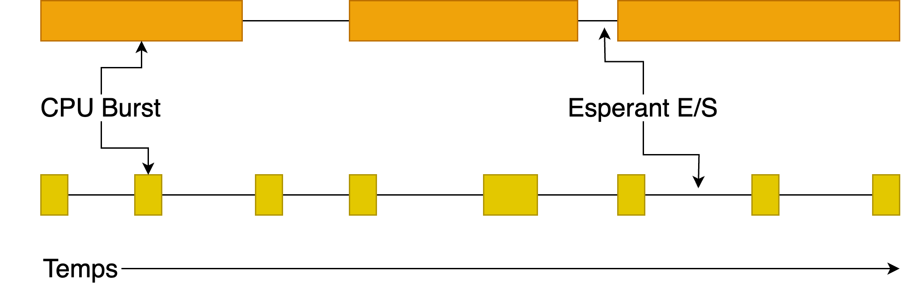
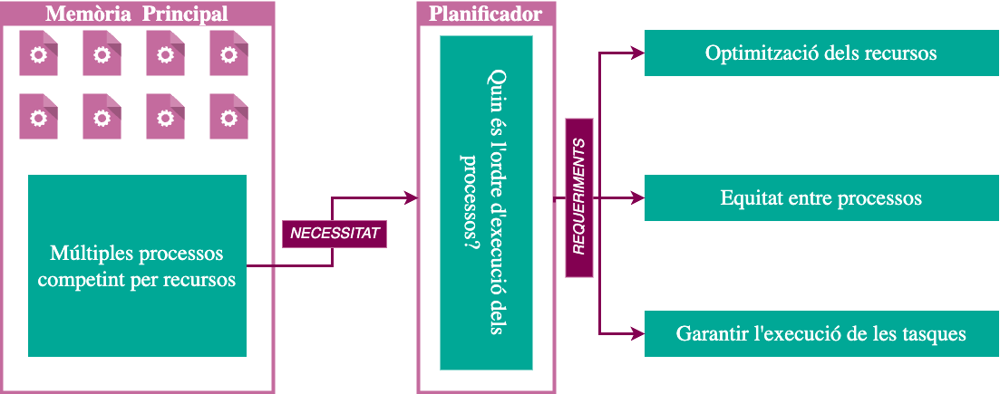
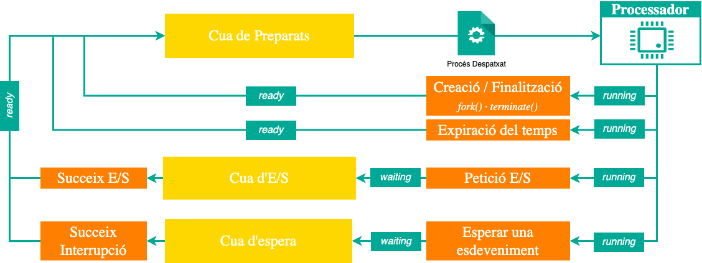
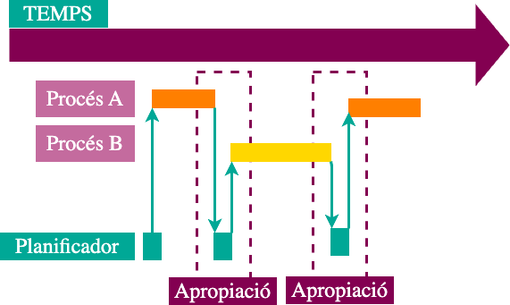
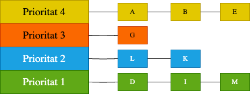

classDiagram
direction LR
class Scheduler {
+selectProcess() Process
+dispatch()
+handleInterrupt(Interrupció)
}
class ReadyQueue {
+enqueue(Process)
+dequeue() Process
+sortBy()
+processes: Process[]
}
class Process {
+pid: int
+priority: int
+state: ProcessState
+pcb: PCB
+execute()
+requestIO(IODevice)
+yield()
}
class PCB {
+context: Context
+memoryInfo: MemoryInfo
+ioInfo: IOInfo[]
+saveContext()
+loadContext()
}
class CPU {
+currentProcess: Process
+executeCycle()
+raiseInterrupt(Interrupció)
}
class IODevice {
+deviceId: int
+startIO(Process)
+completeIO(int eventId)
}
class Interrupció {
TIMER
IO_COMPLETION
SYSCALL
ERROR
}
Scheduler --> ReadyQueue: selecciona
Scheduler --> Despatxador: utilitza
Despatxador --> CPU: controla
Despatxador --> PCB: gestiona
ReadyQueue "1" --> "*" Process: conté
CPU --> Process: executa 0..1
CPU --> Interrupció: genera
CPU --> Scheduler: notifica
IODevice --> Process: bloqueja/desbloqueja
IODevice --> Interrupció: genera
IODevice --> Scheduler: notifica
Process --> PCB: té
Process --> CPU: s'executa
Process --> IODevice: sol·licita
Planificació de processos
Unitat 4 · Sistemes Operatius (SO)
Jordi Mateo Fornés
Conceptes bàsics
Necessitat d’un procés
Els processos presenten necessitats variades a l’hora d’utilitzar els recursos del sistema. En general, la majoria dels processos passen per cicles de burst, alternant entre períodes d’activitat intensiva d’ús del processador (CPU) i períodes d’activitat d’entrada/sortida (E/S).
Situació 1: Executant un procés
Obrint el firefox
Assumiu un sistema Linux on volem executar únicament Firefox, assumint que la resta de processos del sistema operatiu s’executen en un altre processador.
Situació 1: Accions del SO
Resum
El SO (1) Carrega a Memòria Principal. (2) El planificador selecciona el procés. (3) Despatxa a la CPU. (4) L’usuari interactua amb l’aplicació.
Situació 1: Execució Concurrent
Mono vs. Multiprogramació
Què Succeeix?
Què passa en aquest escenari si el sistema operatiu és monoprogramat? I si és multiprogramat? Pensa en com es gestionarien APP1 i APP2 en cada cas.
- Monoprogramat: Només un procés a la memòria. APP2 ha d’esperar que APP1 acabi.
- Multiprogramat: Múltiples processos a la memòria. APP2 pot ser carregat i executat mentre APP1 està en espera o en execució.
Sistema Multiprogramat
Quin és l’objectiu de la planificació?
Com funciona el planificador?
Quan s’ha de planificar?
El planificador s’executa:
En resposta a interrupcions o esdeveniments: a) Interrupcions de rellotge, b) Crides al sistema, c) Finalització d’operacions d’E/S.
Què és l’apropiació?
Observacions
- ↑ complexitat del SO → Canvi de contexts.
- ↑ cost → Interrupcions periòdiques.
- ↑ la justicia i l’equitat.
Criteris de planificació (Generals)
- Justícia Accés equitatiu als recursos per a tots els processos.
- Equilibri Totes les parts del sistema estiguin utilitzades.
- Priorització: Preferència a processos amb més urgència.
Criteris de planificació (En lot)
- Utilització de la CPU: % de temps d’ocupació.
- Productivitat: Nº de processos completats per unitat de temps.
- Temps de retorn: Temps total des que un procés s’envia fins que es completa, incloent temps d’espera i execució.
Criteris de planificació (Interactius)
- Temps d’espera: Temps que un procés roman a la cua de preparats.
- Temps de resposta: Temps entre una sol·licitud de l’usuari i la primera resposta.
Criteris de planificació (Temps real)
- Predictibilitat: Capacitat del sistema per complir els requisits temporals de manera sistemàtica.
- Deadline: Capacitat de garantir que els processos finalitzin abans d’un temps límit establert.
Minimitzar el temps de resposta
- Minimitzar el temps transcorregut per completar una operació.
- Minimitzar el temps que l’usuari percep.
- Temps per mostrar una tecla en un editor.
- Temps per compilar un programa.
- Tasques en temps real: complir terminis imposats per l’entorn.
Maximitzar el rendiment
- Maximitzar les operacions per segon.
- Relacionat amb el temps de resposta, però no idèntic.
- Minimitzar el temps de resposta pot portar a més canvis de context que si només es maximitza el rendiment.
- Dos aspectes per maximitzar el rendiment:
- Minimitzar la sobrecàrrega (per exemple, canvis de context).
- Ús eficient dels recursos (CPU, disc, memòria, etc).
Justícia
- Compartir la CPU entre els usuaris de manera equitativa.
- La justícia no és minimitzar el temps de resposta mitjà.
- Reduir el temps de resposta mitjà pot comportar en alguns casos planificacions injustes.
Planificació òptima
No existeix cap política òptima que permeti satisfer tots els criteris anteriors al mateix temps.
Un algorisme pot maximitzar el throughput però no minimitzar el temps de resposta.
La selecció de l’algorisme de planificació depèn dels objectius específics del sistema i de la càrrega de treball que s’espera gestionar.
Algorismes de planificació
FCFS - First-Come, First-Served
flowchart LR
classDef iniciFi fill:#00A896,color:white,stroke:#007D6C,stroke-width:2px,font-size:22px;
classDef decisio fill:#C46B9E,color:white,stroke:#963D6D,stroke-width:2px,font-size:22px;
classDef proces fill:#fff,color:#333,stroke:#00A896,stroke-width:2px,font-size:22px;
A([Inici]):::iniciFi --> B{Hi ha<br>processos<br>pendents?}:::decisio
B -->|Sí| C[[Ordenar per<br>arribada]]:::proces
C --> D[[Executar<br>fins finalització]]:::proces
D --> E{Tots<br>executats?}:::decisio
E -->|No| C
E -->|Sí| F([Fi]):::iniciFi
B -->|No| F
linkStyle default stroke:#666, arrowhead:vee;
style A text-align:center;
style B text-align:center;
style C text-align:center;
style D text-align:center;
style E text-align:center;
style F text-align:center;
FCFS - Característiques
- Simplicitat: Algorisme senzill d’implementar i comprendre.
- No apropiatiu: Un procés s’executa fins a la seva finalització o bloqueig.
- Garantia de no inanició: Tots els processos eventualment s’executen (sota la suposició que acaben).
FCFS - Limitacions
- Efecte Convoy: Processos curts poden quedar bloquejats per processos llargs, incrementant el temps d’espera mitjà.
- Pot generar temps d’espera elevats: Especialment per a processos curts darrere de processos llargs.
Adequat per a càrregues de treball homogènies on la durada dels processos és similar. Poc òptim per a entorns amb variabilitat en la durada dels processos, ja que pot afectar la resposta i l’eficiència del sistema.
FCFS - Exemple Il·lustratiu
| \(p\)1 | \(t_a\)2 | \(t_{cpu}\)3 |
|---|---|---|
| 🟢 P1 | 0 | 20 |
| 🔵 P2 | 5 | 5 |
| 🟣 P3 | 6 | 5 |
gantt
title Planificació
dateFormat X
axisFormat %s
section Execució
🟢 P1 : 0, 20
🔵 P2 : 20, 25
🟣 P3 : 25, 30
section Preparats
🔵 P2 a la cua : 5, 20
🟣 P3 a la cua : 6, 25
FCFS - Exemple Il·lustratiu (Mètriques)
- Temps espera:
\(T_{espera} = T_f + T_a - T_{cpu}\) - Temps retorn:
\(T_{retorn} = T_f - T_a\) - Temps resposta:
\(T_{resposta}= T_{inici} - T_a\)
| Mètrica | P1 | P2 | P3 | Avg |
|---|---|---|---|---|
| \(T_a\)1 | 0 | 5 | 6 | - |
| \(T_f\)2 | 20 | 25 | 30 | - |
| \(T_{inici}\)3 | 0 | 20 | 25 | - |
| \(T_{cpu}\)4 | 20 | 5 | 5 | - |
| \(T_{espera}\) | 0 | 15 | 19 | 11.33 |
| \(T_{retorn}\) | 20 | 20 | 24 | 21.33 |
| \(T_{resposta}\) | 0 | 15 | 19 | 11.33 |
Exercici 01: FCFS - Enunciat
Considera els següents escenari i respon les preguntes:
| Procés | Temps arribada | Ràfegues |
|---|---|---|
| A | 0 | \(7_{CPU}\) |
| B | 2 | \(4_{CPU}\) |
| C | 3 | \(2_{CPU}\) |
- Dibuixa el diagrama de Gantt per a l’algorisme FCFS.
- Calcula les següents mètriques de rendiment: Percentatge d’ús de la CPU, Productivitat, Temps d’espera mitjà, Temps de retorn mitjà i Temps de retorn normalitzat mitjà.
- Quin és l’efecte convoy en aquest exemple? Com afecta les mètriques calculades?
Exercici 01: FCFS - Solució
| P | 0 | 2 | 3 | 7 | 8 | 11 | 12 | 13 |
|---|---|---|---|---|---|---|---|---|
| A | E | E | E | F | ||||
| B | P | P | E | E | F | |||
| C | P | P | P | E | E | F |
\[ \%_{CPU} = \dfrac{Tcpu_{ocupada}}{Temps}=\dfrac{13}{13}=1=100\%\]
\[ Productivitat = \dfrac{\#processos}{Temps}=\dfrac{3}{13}=0.23\]
\[ \tilde{T}_{espera}= \dfrac{\tilde{T}_{espera}{A} + \tilde{T}_{espera}{B} + \tilde{T}_{espera}{C} }{\#processos}=\dfrac{0+5+8}{3}=4.3\]
\[ \tilde{T}_{retorn} = \dfrac{\tilde{T}_{retorn}{A} + \tilde{T}_{retorn}{B} + \tilde{T}_{retorn}{C}}{\#processos}=\dfrac{7+9+10}{3}=8.6\]
\[ \tilde{T}retorn_{N} = \dfrac{7/7 + 9/4 + 10/2}{3}=2.75\]
Exercici 01: FCFS - Anàlisi
- Efecte Convoy: El procés P1 (llarg) bloqueja els processos P2 i P3 (curts), incrementant el temps d’espera.
- Sensible a l’ordre arribada: Si P2 o P3 hagués arribat abans que P1, el temps d’espera de P2 hauria estat menor.
- No apropiatiu: P1 ocupa la CPU fins a la seva finalització, sense donar oportunitat a P2 i P3.
- No és adequat per a sistemes interactius o en temps real: Els usuaris poden experimentar retards significatius en la resposta del sistema, ja que els processos curts poden quedar bloquejats darrere de processos llargs.
RR - Diagrama de flux
flowchart LR
classDef iniciFi fill:#00A896,color:white,stroke:#007D6C,stroke-width:2px,font-size:22px;
classDef decisio fill:#C46B9E,color:white,stroke:#963D6D,stroke-width:2px,font-size:22px;
classDef proces fill:#fff,color:#333,stroke:#00A896,stroke-width:2px,font-size:22px;
A([Inici]):::iniciFi --> B{Hi ha<br>processos<br>pendents?}:::decisio
B -->|Sí| C[[Agafar procés<br>de la cua]]:::proces
C --> D{Temps del quantum<br>expirat?}:::decisio
D -->|No| E[[Executar procés]]:::proces
E --> D
D -->|Sí| F[[Col·locar al final de la cua]]:::proces
F --> B
B -->|No| G([Fi]):::iniciFi
Round Robin (RR)
Aquesta política és una variant de FCFS que introdueix l’apropiació mitjançant l’ús de quantums de temps.
- Cada procés rep un quantum de temps per executar-se.
- Quan el quantum expira, el procés és interromput i col·locat al final de la cua de preparats.
Quin és el temps d’espera en un sistema amb \(n\) processos i un quantum de \(q\) unitats de temps?Amb arribades simultànies i sense variabilitat en bursts.
- El temps d’espera màxim per a qualsevol procés és de \((n-1) \cdot q\) unitats de temps.
RR - Característiques
- Cap procés pot monopolitzar la CPU durant un temps determinant (\(q\)).
- Utilitza una cua FIFO per gestionar els processos preparats.
- Utilitza una interrupció de rellotge per implementar el quantum de temps.
- És un algorisme apropiatiu.
RR - Impacte del quantum de temps
Si analitzem l’elecció del quantum de temps (\(q\)):
- Si \(q\) és molt petit:
- Augmenta el nombre de canvis de context.
- Incrementa la sobrecàrrega del sistema.
- Pot reduir l’eficiència i el throughput.
- Si \(q\) és molt gran:
- El comportament s’assembla a FCFS.
- Pot augmentar el temps de resposta per a processos curts.
RR - Exemple en sistemes interactius
RR és especialment adequat per a sistemes interactius on es requereix que els processos curts rebin resposta ràpida.
En sistemes interactius, els processos es poden classificar com a:
- Processos d’usuari: Requereixen més temps de CPU.
- Processos del sistema: Requereixen menys temps de CPU però respostes més ràpides.
Es pot assignar diferents quantums de temps segons el tipus de procés.
A UNIX, per exemple, s’utilitzen diferents quantums per a processos d’usuari i del sistema per equilibrar la resposta i l’eficiència.
- \(q = 100ms\) per a processos d’usuari.
- \(q = 10ms\) per a processos del sistema.
- El overhead del canvi de context és d’aproximadament \(0.1ms - 1ms\). Aquest valor és petit comparat amb la durada del quantum, però rellevant si els quantum són molt petits.
RR Q(20s) - Exemple Il·lustratiu
| \(p\) | \(t_a\) | \(t_{cpu}\) |
|---|---|---|
| 🟢 P1 | 0 | 53 |
| 🔵 P2 | 0 | 8 |
| 🟣 P3 | 0 | 68 |
| 🟠 P4 | 0 | 24 |
| P1 | P2 | P3 | P4 | Avg | |
|---|---|---|---|---|---|
| \(\tilde{T}_{espera}\) | 72 | 20 | 85 | 88 | 66.25 |
| \(\tilde{T}_{retorn}\) | 125 | 28 | 153 | 112 | 104.5 |
gantt title Planificació Round Robin (Q=20) dateFormat X axisFormat %s section Execució 🟢 P1 : 0, 20 🔵 P2 : 20, 28 🟣 P3 : 28, 48 🟠 P4 : 48, 68 🟢 P1 : 68, 88 🟣 P3 : 88, 108 🟠 P4 : 108, 112 🟢 P1 : 112, 125 🟣 P3 : 125, 145 🟣 P3 : 145, 153
RR Q(20s) - Impacte de \(Q\) (Temps d’espera)
| Quantum / Estratègia | P1 | P2 | P3 | P4 | Avg. |
|---|---|---|---|---|---|
| Millor FCFS | 32 | 0 | 85 | 8 | 31.25 |
| Q=1 | 84 | 22 | 85 | 57 | 62 |
| Q=5 | 82 | 20 | 85 | 58 | 61.25 |
| Q=20 | 72 | 20 | 85 | 88 | 66.25 |
| Pitjor FCFS | 68 | 145 | 0 | 121 | 83.5 |
RR Q(20s) - Impacte de \(Q\) (Temps de finalització)
| Quantum / Estratègia | P1 | P2 | P3 | P4 | Avg. |
|---|---|---|---|---|---|
| Millor FCFS | 85 | 8 | 153 | 32 | 69.5 |
| Q=1 | 137 | 30 | 153 | 81 | 100.25 |
| Q=5 | 135 | 28 | 153 | 82 | 99.5 |
| Q=20 | 125 | 28 | 153 | 112 | 104.5 |
| Pitjor FCFS | 121 | 153 | 68 | 145 | 121.75 |
Exercici 02: RR - Enunciat
Considera els següents processos i un planificador (RR(Q=1)) si dos processos arriben al mateix temps, s’executarà el procés amb prioritat més elevada; en aquest cas concret (C,B,A):
| Procés | Temps arribada | Ràfegues |
|---|---|---|
| A | 0 | \(7_{CPU}\) |
| B | 2 | \(4_{CPU}\) |
| C | 3 | \(2_{CPU}\) |
- Dibuixa el diagrama de Gantt per a l’algorisme Round-Robin amb un quantum de 1 unitat de temps.
- Calcula les següents mètriques de rendiment: Temps d’espera mitjà, Temps de retorn mitjà, Temps de resposta mitjà i Temps de retorn normalitzat mitjà.
Exercici 02: RR - Solució
| P | 0 | 1 | 2 | 3 | 4 | 5 | 6 | 7 | 8 | 9 | 10 | 11 | 12 | 13 |
|---|---|---|---|---|---|---|---|---|---|---|---|---|---|---|
| A | E | E | P | E | P | P | E | P | P | E | P | E | E | F |
| B | E | P | P | E | P | P | E | P | E | F | ||||
| C | P | E | P | P | E | F |
\[ \tilde{T}_{espera}= \dfrac{\tilde{T}_{espera}{A} + \tilde{T}_{espera}{B} + \tilde{T}_{espera}{C} }{\#processos}=\dfrac{6+5+3}{3}=4.66\] \[ \tilde{T}_{retorn} = \dfrac{\tilde{T}_{retorn}{A} + \tilde{T}_{retorn}{B} + \tilde{T}_{retorn}{C}}{\#processos}=\dfrac{13+9+5}{3}=9\] \[ \tilde{T}resposta =\dfrac{\tilde{T}_{resposta}{A} + \tilde{T}_{resposta}{B} + \tilde{T}_{resposta}{C}}{\#processos}=\dfrac{0+0+1}{3}=0.33\] \[ \tilde{T}retorn_{N} = \dfrac{7/7 + 9/4 + 5/2}{3}=2.2\]
RR vs FCFS (I)
Si assumim que el canvi de context triga \(0 ms\), podem afirmar que RR és sempre millor que FCFS?
- RR no és sempre millor que FCFS.
- La decisió depèn de la càrrega de treball, la variabilitat dels bursts i els objectius del sistema (throughput vs temps de resposta).
Suposa que tenim 10 tasques, cada una amb 100s de burst de CPU i un quantum de 1s, i demostra que FCFS pot ser més eficient que RR en aquest cas.
RR vs FCFS (II)
| Tasca | Temps finalització FCFS | Temps finalització RR |
|---|---|---|
| P1 | 100s | 991s |
| P2 | 200s | 992s |
| … | … | … |
| P10 | 1000s | 1000s |
- Els processos s’acaben pràcticament en el mateix moment amb ambdós algorismes.
- El throughput és molt millor amb FCFS en aquest cas, ja que RR introdueix més alternança entre processos.
- Els estats de cache poden ser compartits amb RR, però amb FCFS cada procés pot utilitzar la cache de manera més eficient.
- RR és avantatjós només quan els processos tenen durades variables o quan es busca responsivitat interactiva. En casos de processos molt llargs i uniformes, FCFS pot ser més eficient.
Prioritats
- L’algorisme assigna un valor de prioritat a cada procés, (a linux pots utilitzar
niceper ajustar la prioritat). - En cas d’empat, es pot aplicar un altre algorisme (habitualment FIFO).
- Les prioritats poden ser estàtiques o dinàmiques.
flowchart LR
classDef iniciFi fill:#00A896,color:white,stroke:#007D6C,stroke-width:2px,font-size:22px;
classDef decisio fill:#C46B9E,color:white,stroke:#963D6D,stroke-width:2px,font-size:22px;
classDef proces fill:#fff,color:#333,stroke:#00A896,stroke-width:2px,font-size:22px;
A([Inici]):::iniciFi --> B{Hi ha<br>processos<br>pendents?}:::decisio
B -->|Sí| C[[Ordenar per<br>prioritat]]:::proces
C --> D[[Executar procés<br>més prioritari]]:::proces
D --> E{Tots<br>executats?}:::decisio
E -->|No| C
E -->|Sí| F([Fi]):::iniciFi
B -->|No| F
Exercici 03: Prioritats - Enunciat
Considera els següents processos amb les seves respectives prioritats i respon les preguntes:
| Procés | Temps arribada | Ràfegues | Prioritat |
|---|---|---|---|
| A | 0 | \(7_{CPU}\) | 5 |
| B | 2 | \(4_{CPU}\) | 1 |
| C | 3 | \(2_{CPU}\) | 6 |
- Dibuixa el diagrama de Gantt per a l’algorisme de planificació per prioritats (suposant prioritat ascendent -> B,A,C).
- Calcula les següents mètriques de rendiment: Percentatge d’ús de la CPU, Productivitat, Temps d’espera mitjà, Temps de retorn mitjà i Temps de resposta mitjà.
Exercici 03: Prioritats - Solució
| P | 0 | 2 | 3 | 6 | 11 | 12 | 13 |
|---|---|---|---|---|---|---|---|
| A | E | P | P | E | F | ||
| B | E | E | F | ||||
| C | P | P | E | E | F |
\[ \%_{CPU} = \dfrac{Tcpu_{ocupada}}{Temps}=\dfrac{13}{13}=1=100\%\] \[ Productivitat = \dfrac{\#processos}{Temps}=\dfrac{3}{13}\]
\[ \tilde{T}_{espera} = \dfrac{\tilde{T}_{espera}(A) + \tilde{T}_{espera}(B) + \tilde{T}_{espera}(C)}{\#processos}=\dfrac{4+0+8}{3}=4\] \[ \tilde{T}_{retorn} = \dfrac{\tilde{T}_{retorn}(A) + \tilde{T}_{retorn}(B) + \tilde{T}_{retorn}(C)}{\#processos}=\dfrac{11+4+10}{3}=8.33\] \[ \tilde{T}_{resposta} = \dfrac{\tilde{T}_{resposta}(A) + \tilde{T}_{resposta}(B) + \tilde{T}_{resposta}(C)}{\#processos}=\dfrac{0+0+8}{3}=2.66\]
Envelliment
Amb els algorismes de prioritat, els processos amb prioritat baixa poden quedar inactius indefinidament (inanició) si sempre hi ha processos amb prioritat més alta a la cua de preparats.
L’envelliment és una estratègia utilitzada per abordar el problema d’inanició que pot sorgir en els algorismes de planificació basats en prioritats. Augmenta periòdicament la prioritat dels processos preparats que no aconsegueixen executar-se.
I si coneixem el futur? – SJF i SRTF
- Shortest Job First (SJF)
- Executa el procés amb menor temps de CPU total.
- També conegut com Shortest Time to Completion First (STCF).
- Politica no apropiativa: un cop un procés comença, s’executa fins al final del burst o fi del procés.
- Shortest Remaining Time First (SRTF)
- Versió apropiativa de SJF.
- Si arriba un procés amb un temps restant menor que el del procés actual, aquest és interromput immediatament.
- També conegut com Shortest Remaining Time to Completion First (SRTCF).
SJF - Exemple Il·lustratiu
| \(p\)1 | \(t_a\)2 | \(t_{cpu}\)3 |
|---|---|---|
| 🟢 P1 | 0 | 10 |
| 🔵 P2 | 0 | 5 |
| 🟣 P3 | 1 | 4 |
gantt title Planificació SJF dateFormat X axisFormat %s section Execució 🔵 P2 : 0, 5 🟣 P3 : 5, 9 🟢 P1 : 9, 19 section Preparats 🟢 P1 a la cua : 0, 9 🟣 P3 a la cua : 1, 5
| Mètrica | P1 | P2 | P3 | Mitjana |
|---|---|---|---|---|
| \(T_{espera}\) | 9 | 0 | 4 | 4.33 |
| \(T_{retorn}\) | 19 | 5 | 8 | 10.67 |
| \(T_{resposta}\) | 9 | 0 | 4 | 4.33 |
SJF - Característiques
- Pot provocar inanició? Sí, qualsevol política que prioritzi una propietat pot provocar inanició.
- Pot provocar convoy? Sí, qualsevol política no apropiativa pot provocar convoy.
- Redueix el temps de retorn? Sí, redueix el temps mitjà de finalització si i només si tots els processos arriben alhora.
- Requereix coneixement previ del temps de burst? Sí, és un dels seus inconvenients principals.
SRTF - Exemple Il·lustratiu
| \(p\) | \(t_a\) | \(t_{cpu}\) |
|---|---|---|
| 🟢 P1 | 0 | 20 |
| 🔵 P2 | 5 | 5 |
| 🟣 P3 | 8 | 1 |
gantt title Planificació SRTF dateFormat X axisFormat %s section Execució 🟢 P1 : 0, 5 🔵 P2 : 5, 8 🟣 P3 : 8, 9 🔵 P2 : 9, 11 🟢 P1 : 11, 22 section Preparats 🟢 P1 a la cua : 5, 11 🔵 P2 a la cua : 8, 9
| Mètrica | P1 | P2 | P3 | Mitjana |
|---|---|---|---|---|
| \(T_{espera}\) | 6 | 1 | 0 | 2.33 |
| \(T_{retorn}\) | 22 | 6 | 1 | 9.67 |
| \(T_{resposta}\) | 0 | 0 | 0 | 0 |
SRTF - Característiques
- Apropiatiu: un procés curt pot interrompre un procés més llarg.
- Redueix significativament el temps mitjà de resposta per a processos curts.
- Pot provocar inanició en processos llargs si arriben processos curts constantment.
- Cal considerar canvis de context i el seu cost associat.
Preveient el futur: SRTF com a referència
- Si poguéssim conèixer el temps restant de cada procés, sempre podríem executar el procés que acabaria abans.
Com fer-ho en la pràctica?
- Alguns sistemes demanen a l’usuari indicar la durada estimada del job. Per evitar abusos, el sistema pot interrompre jobs que superin aquesta durada.
- És molt difícil predir amb precisió el temps de burst, fins i tot per usuaris honestos.
SRTF: el límit teòric
- SRTF (Shortest Remaining Time First) és una política òptima pel temps de resposta mitjà.
- Cap altra política pot superar SRTF en aquest criteri.
- Es fa servir sovint com a referència de comparació amb altres algorismes.
Com es pot predir el futur?
Una estratègia comuna és utilitzar estimacions basades en l’historial de comportament dels processos. Molts programes mostren patrons repetitius en la seva utilització de la CPU i I/O. Si els processos tenen un comportament aleatori, aquesta estratègia no seria útil.
\[t_n = f(t_{n-1}, t_{n-2}, t_{n-3}, \ldots)\] On: \(t_n\) és la durada estimada del següent burst de CPU. \(f\) és una funció que utilitza els bursts anteriors per fer la predicció.
Si un procés ha estat E/S o CPU en el passat, probablement continuarà sent-ho en el futur.
Exercici 04: SJF vs RR
Realitza la planificació dels següents processos utilitzant els algorismes de planificació Round Robin amb un quantum de 3 unitats de temps i SJF (Shortest Job First) no apropiatiu. En cas d’empat on 2 processos arribin a la cua de preparats al mateix temps, s’executarà el procés amb prioritat més elevada en aquest cas (B,A,C).
| Procés | Temps arribada | Ràfegues |
|---|---|---|
| A | 7 | \(5_{CPU},2_{E/S},4_{CPU}\) |
| B | 3 | \(4_{CPU},1_{E/S},1_{CPU},1_{E/S},1_{CPU}\) |
| C | 1 | \(2_{CPU},1_{E/S},3_{CPU},2_{E/S},1_{CPU}\) |
Es demana:
- Mostrar la planificació dels processos en un diagrama de Gantt.
- Calcular el temps d’espera, resposta i retorn mitjà de cada procés.
- Comparar els resultats obtinguts amb els algorismes de planificació.
Les solucions es troben a: Round Robin Q=3 i SJF.
Què són les cues multinivell?
Objectiu: Optimitzar l’ús de la CPU separant processos segons les seves necessitats de recursos (com ara intensitat d’E/S o de CPU) i assignant-los a diferents cues, cadascuna amb polítiques de planificació personalitzades.

Cues Multinivell sense Retroalimentació:
- Assignació fixa de processos a una cua segons les seves característiques inicials.
- No es permet el moviment entre cues; cada procés roman a la seva cua original.
Cues Multinivell amb Retroalimentació:
- Els processos poden canviar de cua en funció del seu comportament dinàmic.
- Inclou promoció o degradació de prioritats segons el rendiment o el consum de recursos.
Cues sense Retroalimentació
- Assignació Estàtica de Processos a Cues:
- Els processos es col·loquen en una cua en funció de característiques fixes (p. ex., tipus d’operacions).
- Exemples: processos intensius en E/S en cues de primer pla i processos intensius en CPU en cues de segon pla.
- Polítiques de Planificació Específiques per a Cada Cua:
- Round Robin (RR) per a cues de primer pla.
- First-Come-First-Served (FCFS) per a cues de segon pla.
- Assignació de la CPU entre les Cues:
- Prioritat Absoluta: S’assigna la CPU primer a la cua amb prioritat més alta i només quan està buida es passa a la següent.
- Assignació Temporal (Time Slicing): Cada cua té un percentatge fix de temps de CPU, segons la seva prioritat (p. ex., 70% per la prioritat més alta, 20% per la segona, 10% per la més baixa).
Cues amb Retroalimentació
- Els processos s’assignen inicialment a la cua de major prioritat.
- El moviment entre cues es basa en el comportament durant l’execució, permetent que processos intensius en E/S, de curta durada, es mantinguin a prop de la CPU, mentre que els processos CPU-intensius descendeixin per no monopolitzar els recursos.
Exemple: Els processos curts o amb alta demanda d’E/S es mantenen en la part superior, reduint la latència de resposta, mentre que processos amb alta demanda de CPU es desplacen ràpidament cap a cues de menor prioritat, aconseguint una eficiència semblant a SRT (Shortest Remaining Time).
Promoció
Els processos que completen la seva execució dins del seu quantum de temps poden ascendir a una cua de prioritat superior.
Degradació
Els processos que no completen la seva execució dins del quantum descendeixen a una cua de prioritat inferior.
Assignació Temporal de la CPU en Cues amb Retroalimentació
Quantum de Temps Variable: Cada cua de prioritat té un quantum de temps específic i progressivament més llarg en cues de menor prioritat, optimitzant així la gestió de processos de llarga durada.
Exemple: Cues Round Robin amb quantums exponencials (1ms, 2ms, 4ms, etc.) per a processos de llarga durada.
Moviment Dinàmic entre Cues: Si un procés no finalitza dins del seu quantum assignat, es mou a una cua amb menor prioritat, on rebrà un quantum més llarg però menor prioritat d’execució.
Exemple: Els processos amb alta demanda de CPU descendeixen ràpidament de prioritat, evitant que monopolitzin la CPU. Els processos de curta durada i/o intensius en E/S mantenen la prioritat alta, maximitzant el seu accés a la CPU i reduint la latència.
Estratègies de Planificació i Contramesures
- Estructura Flexible de Cues: Les cues amb retroalimentació permeten que els processos amb canvis de comportament puguin ajustar la seva posició.
- Temps de CPU per Cua: Cada cua rep un percentatge del temps de CPU: P. ex., cues interactives reben un percentatge més alt per a reduir el temps de resposta.
Feta la llei, feta la trampa: els usuaris poden manipular les prioritats dels processos per obtenir un millor rendiment, tot i que això pot afectar negativament la resta de processos inversió de prioritats.
Exemple: Othello
- Objectiu: Mantenir el programa en una cua de major prioritat per garantir temps de CPU preferent i una resposta ràpida en les decisions del joc.
- El programa executava una sèrie d’operacions de sortida (
printf()), aparentment innecessàries des d’un punt de vista funcional. Aquesta activitat d’entrada/sortida feia que el sistema considerés el procés com a input/output-bound (intensiu en E/S) en lloc de CPU-bound (intensiu en CPU). - Resultat: Mantenir-se en una cua de major prioritat gràcies a la detecció del seu comportament d’E/S. Evitar el descens de prioritat que es produeix en els processos intensius en CPU que consumeixen els seus quantums sense fer operacions d’E/S.
Nota: En sistemes de producció, es poden aplicar polítiques restrictives o tècniques d’anàlisi per detectar i limitar aquest tipus de manipulacions de prioritat per mantenir l’equilibri i l’eficiència del sistema.
Això és tot per avui
TAKE HOME MESSAGE
La planificació de processos és un dels aspectes més importants dels sistemes operatius. Els algorismes de planificació són fonamentals per garantir l’eficiència i el rendiment del sistema.


Unitat 4 · Sistemes Operatius (SO) 🏠